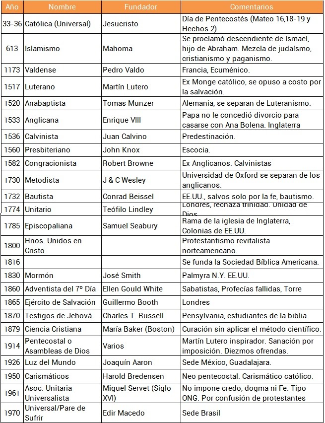

"Y yo también te digo, que tú eres Pedro, y sobre esta roca edificaré mi iglesia; y las puertas del Hades no prevalecerán contra ella. Y a ti te daré las llaves del reino de los cielos; y todo lo que atares en la tierra será atado en los cielos; y todo lo que desatares en la tierra será desatado en los cielos".
Comentario: La Biblia es clara, Jesucristo fundo una sola iglesia, no varias, no dice tu iglesia o la iglesia, dice “mi iglesia” suya de él, dueño y señor. Las otras iglesias que aparecen y desaparecen no son fundadas por Jesucristo, son “fundadas” u organizadas por personas como tú o yo. Además, deja constancia que nunca, jamás prevalecerá la “oscuridad” contra esta, así pasen décadas y tribulaciones. No dice que si hay confusión yo me apartaré para "aparecer" en "otras" iglesias que vayan formando por aquí y por allá según su interpretación. Es firme, al igual que los hombres que la guían a través de los tiempos. Ellos no son “impecables” pero si “infalibles” en la fe, por eso todos incluido el Papa se confiesa para reconciliarse con Dios.
Una de las confusiones culturales fue que a los que dirigían le dieron una categoría de semi–dios. Aun así, con todos sus aciertos y desaciertos la iglesia primera ha mantenido y sigue cuidando la fe.
Mateo 16:18-19 Reina-Valera 1960 (RVR1960)Por tanto, id, y haced discípulos a todas las naciones, bautizándolos en el nombre del Padre, y del Hijo, y del Espíritu Santo; enseñándoles que guarden todas las cosas que os he mandado; y he aquí yo estoy con vosotros todos los días, hasta el fin del mundo. Amén.
A continuación una relación de las (distintas) iglesias, denominaciones, sectas, grupos formados.
¿Te ubicas en cuál estás?
